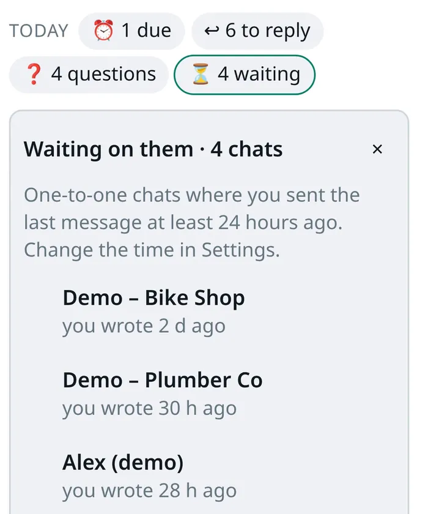
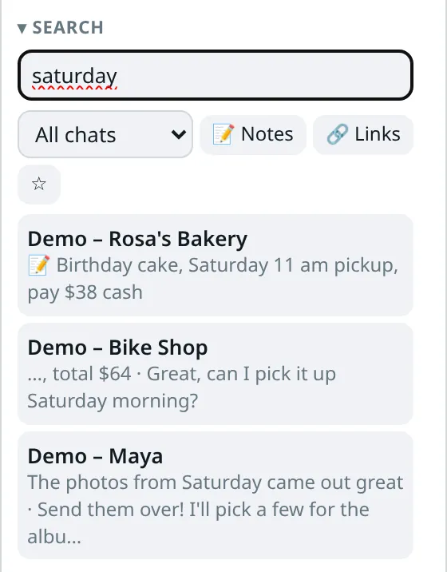
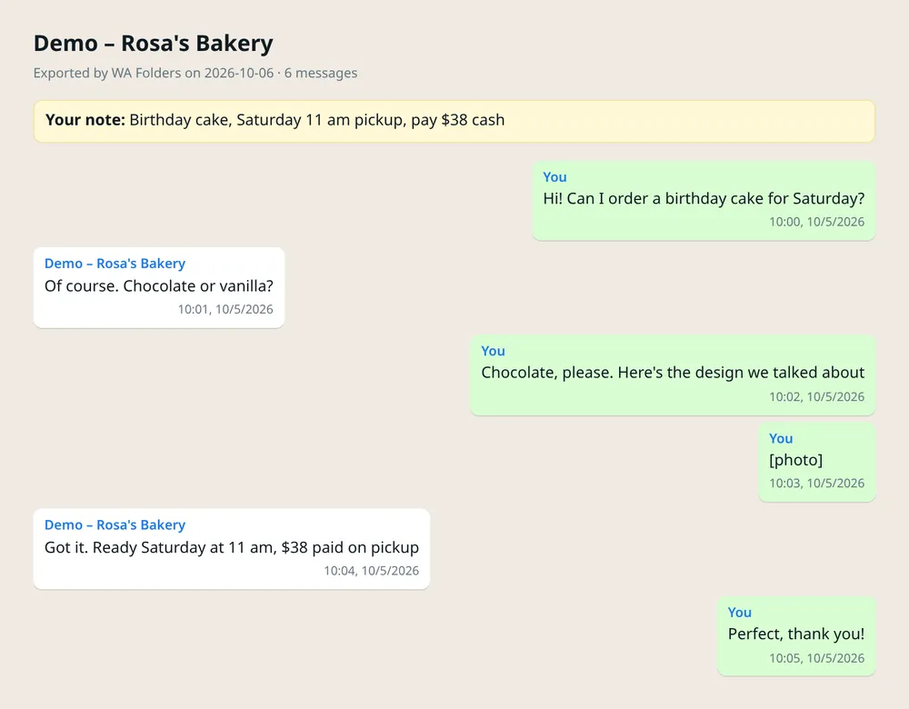

Organize WhatsApp Web chats into folders. Search and export them too.
WA Folders puts folder tabs above your chat list, finds old messages, exports chats to CSV or HTML, and shows who's still waiting on a reply. It all stays in your browser.
Free plan with no time limit. Pro is a one-time $4.99 payment, no subscription.

See it work: 33 seconds, real extension
WA Folders 1.2.9 recorded as it runs: make Family, Work and Clients, file chats, switch tabs, search for "invoice". Real extension, sample chats with made-up names, on a mock WhatsApp Web page (no real account).
Prefer the short version? 28-second animated walkthrough (an illustration, not a recording).
What it adds to WhatsApp Web
The panel sits in the conversation area, so your chat list stays visible. On a narrow window it folds into a tab.
Family, Work, Clients: one click each
Make folders with your own colours and emoji. They sit as tabs above the chat list, with unread, reply and question markers. On first run WA Folders can suggest folders from chat names; nothing is filed until you press Add these.
Read more about folders →
See who you owe a reply, and who owes you
One line at the top of the panel counts what's due, who's waiting on you, who asked you a question and who went quiet. Set "remind me if they don't reply in 1 day" and the reminder clears itself if they answer.
Read more about follow-ups →
Find the address someone sent in March
Search chat names (even unopened ones), your notes and the messages WA Folders has seen. Filter by folder, notes or links. Pro's Load whole chat searches a chat's entire history.
Read more about search →
Export a chat to HTML, CSV, Markdown or JSON
One click on the open chat. CSV opens cleanly in Excel. Media shows as labels like [photo] and [voice message]. Pro adds the whole chat from the start, a whole folder in one file, or a password-protected file.
Read more about export →
Voice notes to text
Click Transcribe under a voice note. The speech model runs on your computer by default (about 80 or 252 MB, downloaded once after you agree).
How it works →Translate messages
Portuguese, English and Spanish, with Chrome's built-in translator. Translate your draft too; you still press Enter.
How it works →Privacy blur
Blur names, photos and messages with Alt+Shift+U. Hide WhatsApp Web at once with Alt+Shift+H.
Catch me up
Summarize a long chat and draft a reply with Chrome's on-device AI, or your own OpenAI, Anthropic, Gemini or Ollama key.
Private notes
"Owes me $40." Notes are saved only on your computer and show up in search.
And the rest
Quick replies with the person's name, a deal board, a command palette (Ctrl+K), auto-file rules, backup and restore, light and dark themes. In 6 languages.
Free to try. Pay once to unlock everything.
No subscription. Every limit message in the extension has an Upgrade button, so you can decide when you hit one.
Free
Everything, with daily allowances.
- 5 folders
- 5 search results per search
- 3 exports a day
- 5 voice-note transcriptions a day
- 20 translations a day
- Today line, Waiting on them, privacy blur
Pro
- No limits on anything in the Free column
- Load whole chat and search its full history
- Whole-folder and password-protected exports
- PIN lock screen
- Sync folders between your Chrome browsers
- Try it free for 7 days inside the extension, no card
No WA Folders yet? Add it to Chrome free first, then unlock.
After checkout (Polar), paste your license key (starts with WAF-) in the toolbar popup.
| Free vs Pro | Free | Pro |
|---|---|---|
| Folders (tabs above the chat list) | 5 | Unlimited |
| Search results per search | 5 | All, plus full chat history |
| Chat exports | 3 a day, loaded messages | Unlimited, whole chat, whole folder, password-protected |
| Voice notes to text | 5 a day | Unlimited |
| Translations | 20 a day | Unlimited |
| Follow-up reminders | 2 at a time | Unlimited |
| AI catch-up and reply drafts | 3 a day | Unlimited |
| Quick replies / auto-file rules | 3 / 1 | Unlimited |
| Deal board chats / saved searches | 5 / 1 | Unlimited |
| PIN lock screen | — | ✓ |
| Sync between your Chrome browsers | — | ✓ (off by default) |
| Today line, Waiting on them, Questions for me | ✓ | ✓ |
| Privacy blur and hide shortcut | ✓ | ✓ |
| Price | $0, no time limit | $4.99 once |
Limits on every plan: Load whole chat stops at 20,000 messages, one export keeps the newest 5,000 loaded messages, a folder export opens up to 100 chats, and voice notes over 15 minutes aren't transcribed.
Your chats stay on your computer
- Stored locally. Folders, notes, reminders and the search index live in
chrome.storage.localin your Chrome profile. - No account, analytics, ads or trackers, and no WA Folders server.
- Never sends. No bulk sending, broadcasts, auto-replies or contact scraping. It runs only on web.whatsapp.com.
- AI, transcription and translation run on your computer by default. If you add your own API key, only what you click goes to the provider you chose.
- License check sends your key only, no chat content. Sync (Pro, off by default) copies folders, quick replies and rules through Chrome Sync; messages and notes never sync.
Read the full privacy policy · How it compares with WhatsApp Lists and other extensions
Questions
How do I make folders in WhatsApp Web?
Install WA Folders from the Chrome Web Store and open web.whatsapp.com. In the WA Folders panel, type a folder name and press Add, then open a chat and press Add chat on that folder. Each folder shows up as a tab above your chat list. The free plan includes 5 folders. Step-by-step: How to make folders in WhatsApp Web.
Is it free?
Yes. The free plan has no time limit: 5 folders, 5 search results per search, 3 exports a day, 5 voice-note transcriptions and 20 translations a day, plus small allowances for reminders, quick replies, rules, AI answers and the deal board. Pro removes those limits for a one-time payment of $4.99.
Is Pro a subscription?
No. You pay once and Pro stays unlocked. You can also try Pro free for 7 days from inside the extension, with no card.
Can I search WhatsApp Web messages?
Yes. WA Folders searches chat names (including chats you haven't opened yet), your private notes, and messages in chats you have opened while it was running. Pro adds Load whole chat, which searches that chat's full history. Why some messages don't show up.
Can I export a WhatsApp Web chat?
Yes, to HTML, CSV, Markdown or JSON, from the open chat. Photos, files and voice messages appear as labels like [photo]. Free allows 3 exports a day; Pro exports whole chats, whole folders and password-protected files. What ends up in the file.
Does it work on the phone app?
No. WA Folders runs only on WhatsApp Web (web.whatsapp.com) in Chrome on a computer. Your folders and notes don't appear on your phone.
Where is my data stored?
In your browser, in chrome.storage.local on your computer. There is no WA Folders server or account. Data leaves the browser only for features you turn on: Chrome Sync (Pro, off by default), the AI or speech provider you picked if you add your own key (only what you click), and the license check (no chat content).
Does it send messages for me?
No. WA Folders never presses Send. Quick replies and AI drafts go into the message box and you press Enter. No bulk sending, auto-replies or WhatsApp Business API.
Is WA Folders made by WhatsApp?
No. It is an independent extension, not affiliated with WhatsApp or Meta.
Try it on your own chat list
Free in the Chrome Web Store. Pay once later if you want everything unlocked.